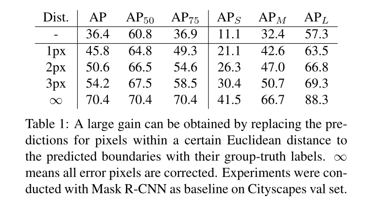
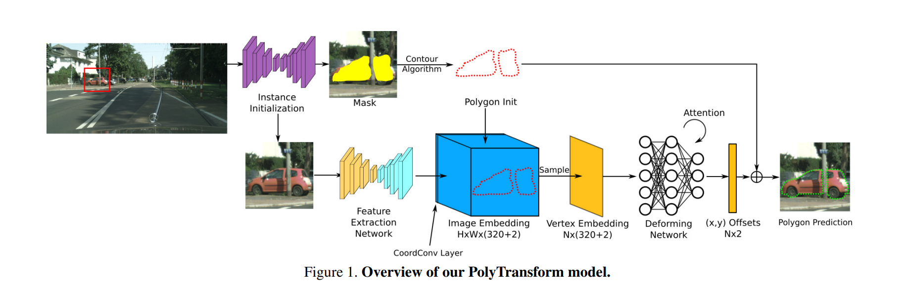
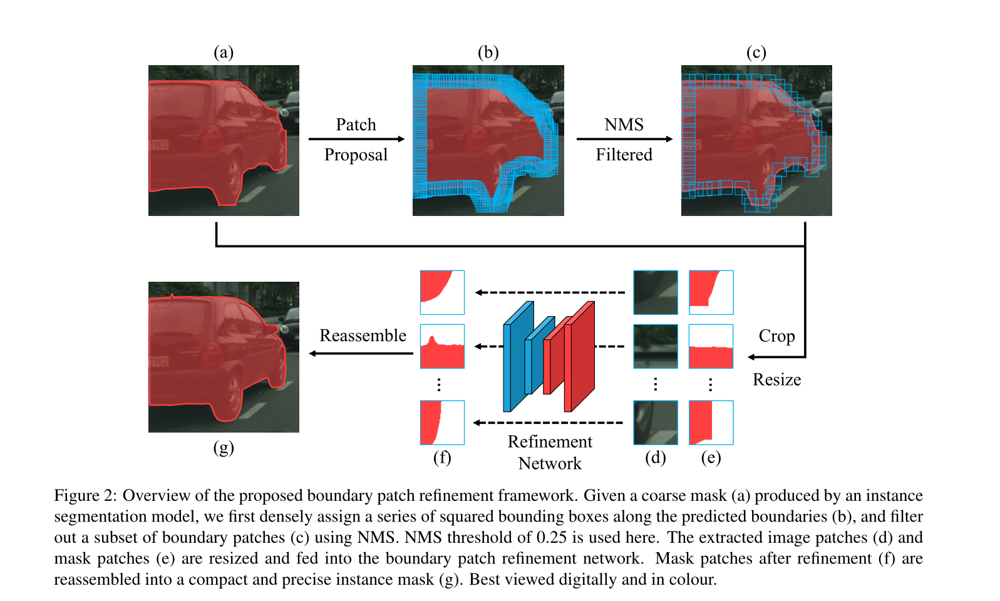

Look Closer to Segment Better: Boundary Patch Refinement for Instance Segmentation
论文简介：
- 作者：Chufeng Tang（https://chufengt.github.io/）
- CVPR 2021
- 单位：清华大学计算机科学与技术系人工智能研究所
- 代码：https://github.com/tinyalpha/BPR
思考：
（0）实例分割精度要想进一步提升，应该在哪里下功夫？

Table 1 显示了边界修复所带来的性能提升具有巨大的潜力。
（1）由于硬件的限制，分割时一般需要 Resize 或切 Patch。那么，应该怎么切patch呢？
-
随机切固定size的patch；
-
按网格切；
-
按实例所在位置切；
-
✅先进行一个粗分割，然后以粗分割的边界为中心，提取Patch块。
（2）High-level information/Low-level information？
高层次语义信息用于提供定位和粗略分割实例（localize and roughly segment objects）；低层次语义信息用于对于分割局部边界细节更为关键。在单一模型中权衡两者是非常困难的。
（3）本文提出的BPR作为一种后处理方案，目前已有的后处理框架是怎么做的？
设计一个边界感知的分割模型是一个分割任务的研究热点。主要的有两个方向：
- 集成一个额外的、专门的模块(分支)来处理边界；
- 基于现有分割模型的结果和后处理方案来细化边界
- PolyTransform：将实例的轮廓转换为一组多边形顶点，应用基于Transformer的网络来预测顶点向对象边界的偏移；缺点：巨大的实例patch和复杂的Transformer架构。
注：PolyTransform(CVPR 2020)

Abstract
由于特征图的空间分辨率较低，以及边界像素比例极低导致的不平衡问题，预测分割图的边界通常不精确。为了解决这个问题，本论文提出了一个概念上简单但有效的后处理改进框架，将实例分割模型的结果进行边界质量改进，称为 BPR。启发自看得更近，分割边界更好（looking closer to segment boundaries better），沿着预测的实例边界提取并细化一系列小边界 patch。通过更高分辨率的边界 patch 细化网络（BPR）。BPR 框架在 Cityspace 基准上，尤其是在边界感知指标上，比 Mask R-CNN 基线有显著改进。将 BPR 框架应用于“PolyTransform+SegFix”基线后，在 Cityspace 排行榜上取得了 SOTA。
1 Introduction
分割所面临的最重要的问题之一是实例边界分割不精确（Figure 1 Left）。校正物体边界附近的误差像素可以大大提高 Mask 质量（Table 1），对于较小的物体，在一定的欧几里德距离(1px/2px/3px)范围内的像素可以获得较大的增益（AP 为9.4/14.2/17.8）。
导致低质量边界分割的关键问题有两个：
（1）特征图空间分辨率的降低使得物体边界周围的细节消失，预测的边界总是粗糙和不精确的（Figure 1,4）。
（2）物体边界周围的像素只占整个图像的一小部分（不到1%），而且本质上很难分类。不平衡导致了优化偏向，低估了边界像素的重要性。
许多研究试图改善边界质量，但上述问题仍未得到很好的解决。
考虑到人工标注行为， 标注人员通常首先对给定图像中的每个对象进行定位和分类，然后在低分辨率下显式或隐式地分割一些粗略的实例掩码。之后，为了获得高质量的模板，注释者需要反复放大局部边界区域，探索更清晰、分辨率更高的边界分割。直观地说，需要高级语义来定位和粗略地分割对象，而低层细节（例如颜色一致性和对比度）对于分割局部边界区域更为关键。
本文受人类分割行为的启发，提出了一种概念上简单而有效的后处理框架，通过crop-then-refine策略来提高边界质量。
- 首先提取沿预测实例边界的一系列小图像块；
- 拼接预测图像边界块后，将送入细化网络，细化粗边界。
- 精确的小块随后被重新组装成紧凑且高质量的实例分割图。
我们将提出的框架称为边界补丁精化（BPR，Boundary Patch Refinement）。
由于我们只在对象边界附近裁剪，因此可以用比以往方法高得多的分辨率来处理 patch，从而可以更好地保留低层细节。同时，小patch中边界像素的比例自然增加，可以消除优化偏差。
在本文的框架中，采用了目前流行的HRNet，它可以在整个网络中保持高分辨率的表示。提出的方法也是一种后处理方案，重点是对边界块进行细化，以提高分割图质量。
3 Framework
提出框架的概述如 Figure 2 所示。作为一种后处理机制，无需对预分割模型本身进行任何修改或微调。

3.1 边界块提取 Boundary Patch Extraction
首先需要确定掩码的哪一部分应该被细化。我们提出了一种有效的滑动窗式算法来提取沿预测实例边界的一系列patch。具体地说，我们密集地分配了一组方形边界框，框的中心区域应该覆盖边界像素，如图2(B)所示。得到的方框仍然包含较大的重叠和冗余，因此我们进一步应用非最大抑制(NMS)算法过滤出patch的子集(图2c)。经验表明，重叠越大，分割性能越好，但同时也存在计算量较大的问题。我们可以调整NMS阈值来控制重叠的数量，以实现更好的速度/精度折衷。除了图像补丁（image patches）外，我们还从给定的实例掩码中提取相应的二值掩码（corresponding binary mask patches）。调整拼接image patches、mask patches后，输入到 boundary patch refinement network 中。
3.2. 边界块细化 Boundary Patch Refinement
Mask Patch
提供的位置和语义信息，使得精化网络无需从头开始学习实例级语义。取而代之的是，优化网络只需要学习如何定位决策边界周围的硬像素，并将它们推到正确的一侧。这一目标可以通过探索局部和高分辨率图像patch中提供的低级别图像特性（例如，颜色一致性和对比度）来实现。相邻的实例可能共享一个相同的边界patch，而学习目标则完全不同且不确定。如果不使用mask patch，则模型很难收敛（Figure 3）。
Boundary Patch Refinement Network.
采用HRNetV2，它可以在整个网络中保持高分辨率表示。通过适当增大输入大小，可以得到比以往方法更高分辨率的边界块。
Reassembling.
将精分割的边界块替换先前的预测，对于那些边界框外没有细化的像素，预测是不变的。对于相邻patch重叠的区域，进行简单的求和取平均，应用0.5的阈值来区分前景和背景。
3.3. Learning and Inference
基于从训练图像中提取的边界块来训练细化网络。在训练过程，只从预测掩码与地面真实掩码的交集大于0.5的实例中提取边界块，而在推理过程中保留所有预测实例。使用像素级的二进制交叉熵损失，用对应的地面真实掩模对模型输出进行监督。在训练时将NMS消除阈值固定为0.25，而在推理时根据速度要求采用不同的阈值。
4 Experiments
数据集：Cityscape
评价指标：COCO-style mask AP、F-score（AF：Average F-score）